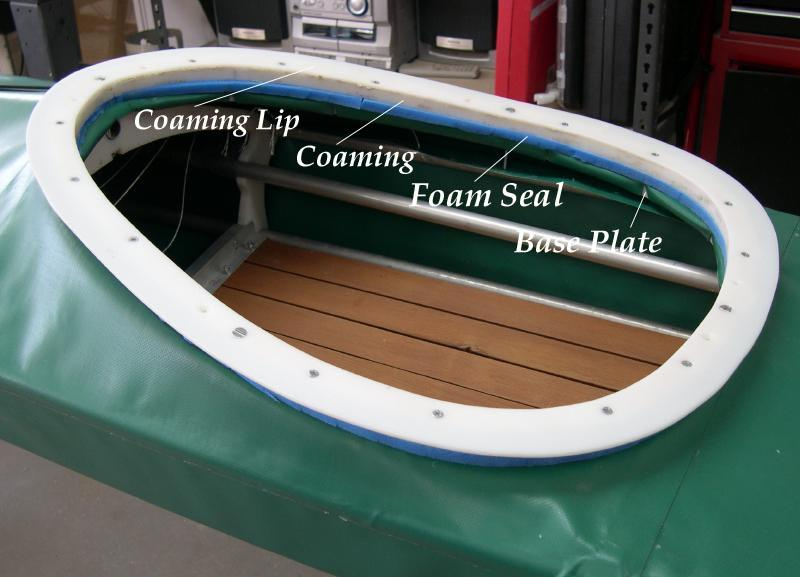

| HDPE Coaming (4 of 4) | Menu Previous Page Next Page |
|

Finished Coaming - The skin goes over the baseplate and is attached to the Velcro underneath.
The foam is sandwiched between the coaming and the skin. The 4 machine screws are attached.
Go to One-Piece Coaming for skin attachment details. Use the (Back) key to return. |
|